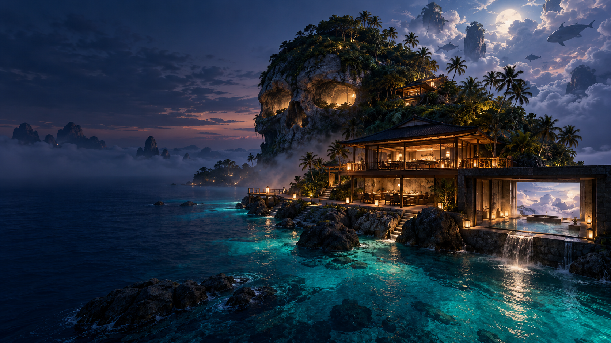
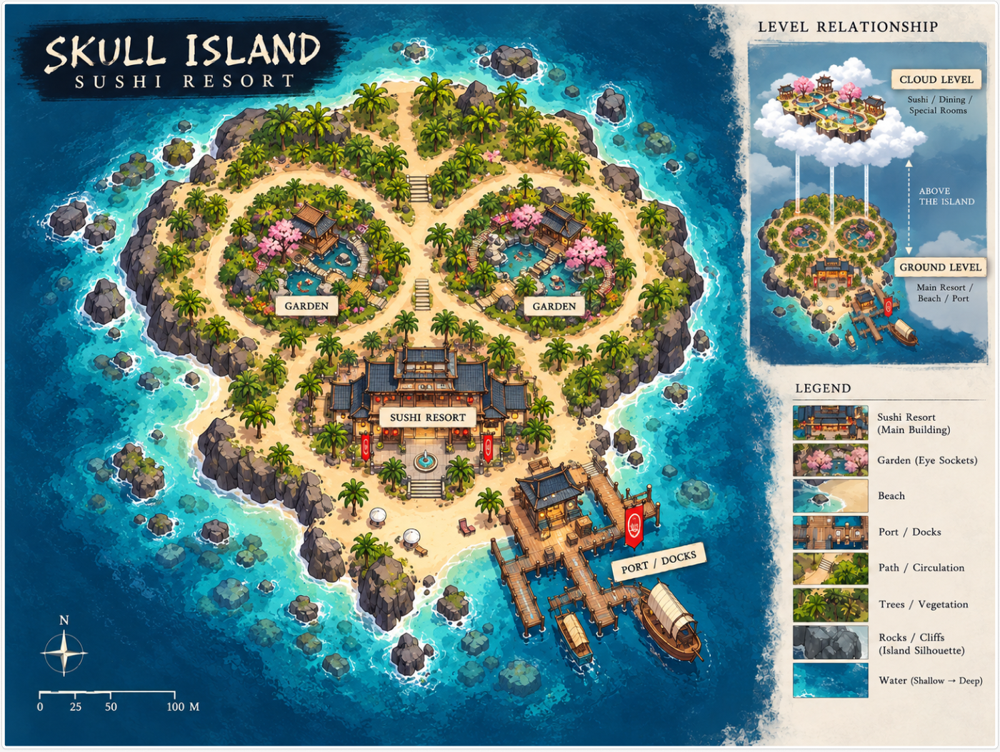
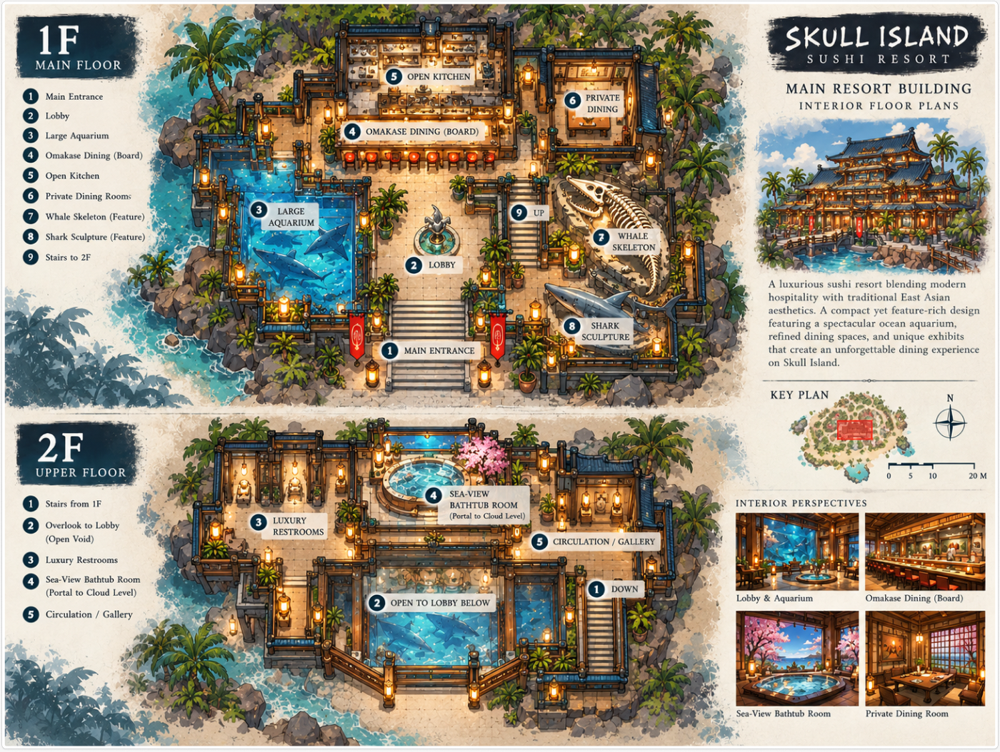

Raw ritual
A lantern-lit lobby opens to a large aquarium, a central omakase counter, an open kitchen and private dining.

An Unreal Engine world study
A compact skull-shaped island. A two-level omakase retreat. A sea-view bath that opens onto an ocean of clouds.
01 / The premise
Rest&Raw Resort is a fictional hospitality world: part environmental design, part interactive experiment, and part dream of eating at the edge of the sea.
The visitor arrives by a small dock, crosses a tropical island shaped like a skull, and enters a two-storey dining house. Below: aquarium light, open kitchen and quiet omakase ritual. Above: a bathing room facing the horizon—and a threshold to the cloud level.
02 / Island & dining
A deliberately compact route keeps the architecture close to the water and the experience focused: arrival, aquarium, counter, gallery, bath.

Concept atlas / ground levelGardens occupy the island's two “eye sockets”; the dining house and dock anchor the southern shore. Concept reference from the team's FigJam board; not a construction plan.
A lantern-lit lobby opens to a large aquarium, a central omakase counter, an open kitchen and private dining.
A quiet gallery leads to a sea-view bathing room—the narrative focus and planned threshold to the sky.

03 / Cloud experience
A quiet free-roaming world of layered fog, moving cloud forms and schools of fish. Walk across a cloud carpet, follow their spatial audio, and catch them by touch.
04 / Build state
05 / News & journal
A living record of experiments, working systems and the next thresholds to cross. Dates are only shown when the team has recorded them.
Loading project journal…
06 / Project credits
HUANG Yifei Peter Huang
ZHAO Xuehan Leo Zhao
Unreal Engine 5.7.4
Environment & interaction study
Hero: original AI-generated concept visualization.
Plans: project FigJam concept references; not real photography.
Rest&Raw Resort is a fictional student creative project. It is not an operating hotel, restaurant or travel destination, and no reservations are accepted.